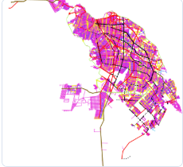

Mapa principal interactivo
Lat/Long: mueva el cursor sobre el mapa
Vista previa WMS
Imagen de referencia de la capa publicada mediante el servicio WMS.

Hoja de vida / CV
En esta sección se visualiza la hoja de vida en formato PDF.